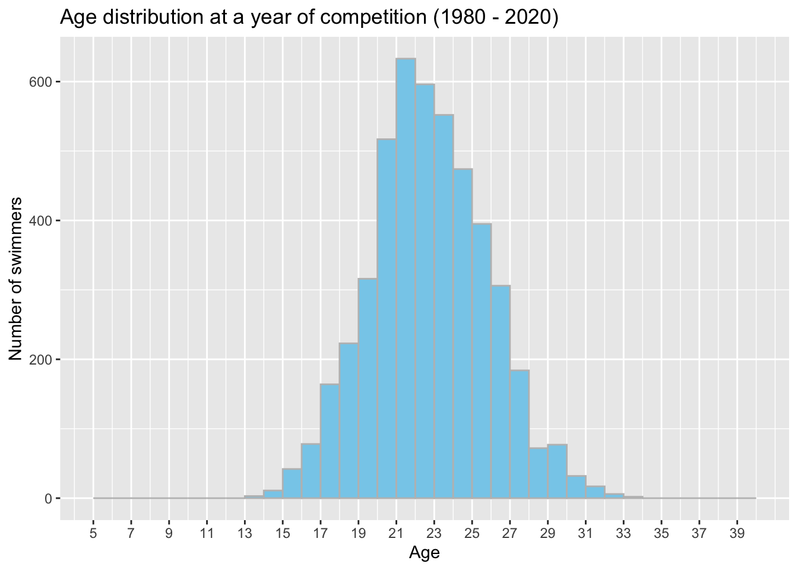

library(tidyverse)
library(ggplot2)
library(here)
library(mosaic)
library(tidyverse)
library(lubridate)
knitr::opts_chunk$set(echo = TRUE, warning=FALSE, message=FALSE)Final Project: Kevin Martell Luya
final_Project
Project submission
Abstract
Swimming has become a fundamental aspect of human culture and has been practiced for thousands of years. They provide a platform for physical activity, competition, and entertainment. Swimming is one of the many sports that have gained popularity worldwide due to its many health benefits and inclusion in major international events like the Olympic Games. Competitive swimming features a variety of events, including freestyle, breaststroke, backstroke, and butterfly. The world records for each event are continually being broken by exceptional world top athletes who push the limits of human performance medley, with races ranging from 50 meters to 1500 meters. This paper will focus on the Top 200 world times data set, which contains historical records of the best 200 swimming times from 1980 to 2020, and answer the following research questions.
1. Are there any patterns or trends in the progression of swimming world records over time? For example, are records being broken more frequently during certain events or specific periods? Or Are world records more likely to be broken in shorter or longer races or specific stroke categories?
2. Is there a relationship between a swimmer’s age, gender, or nationality and their likelihood of breaking a world record? For example, do younger or older swimmers tend to break records more often than their peers?
3. Have advancements in technology or changes in swimming equipment impacted the frequency or magnitude of world record-breaking? For example, have swimsuits or other equipment innovations led to more world records being broken in recent years?
Data set
Data.world is a platform for data collaboration, analysis, and sharing designed to help teams and organizations discover, use, and publish high-quality data in different contexts, such as competitive swimming. Data has been centralized by this organization resulting in the Top 200 world times. In total, there are 5,200 instances and 14 columns. In this data set, each row represents a different swim record. Each column contains a specific piece of information such as the event names, swim times, swim date, event description, and athlete name, as well as information about the team they represent, their full name, gender, birth date, rank order, duration of their swim and last but not the least the city and country code where the event took place in the world. The data is sourced from various international swimming competitions, including the Olympic Games, the FINA World Championships, and national championships in different countries.
# read in the swim data frame
df_swim<- read_csv("./_data/swimming_database.csv")
# look at the head of the data
head(df_swim)This data set has records from 716 swimmers and 474 events worldwide from 1980 to 2020.
# dimensions of the data set
dim(df_swim)[1] 5200 14# number of unique Event name
length(unique(df_swim$`Event Name`))[1] 474# number of unique Team name
length(unique(df_swim$`Team Name`))[1] 58# number of unique Athletes
length(unique(df_swim$`Athlete Full Name`))[1] 716# table of the 26 unique Swimming Events
table(df_swim$`Event description`)
Men 100 Backstroke LCM Male Men 100 Breaststroke LCM Male
200 200
Men 100 Butterfly LCM Male Men 100 Freestyle LCM Male
200 200
Men 1500 Freestyle LCM Male Men 200 Backstroke LCM Male
200 200
Men 200 Breaststroke LCM Male Men 200 Butterfly LCM Male
200 200
Men 200 Freestyle LCM Male Men 200 Medley LCM Male
200 200
Men 400 Freestyle LCM Male Men 400 Medley LCM Male
200 200
Men 800 Freestyle LCM Male Women 100 Backstroke LCM Female
200 200
Women 100 Breaststroke LCM Female Women 100 Butterfly LCM Female
200 200
Women 100 Freestyle LCM Female Women 1500 Freestyle LCM Female
200 200
Women 200 Backstroke LCM Female Women 200 Breaststroke LCM Female
200 200
Women 200 Butterfly LCM Female Women 200 Freestyle LCM Female
200 200
Women 200 Medley LCM Female Women 400 Freestyle LCM Female
200 200
Women 400 Medley LCM Female Women 800 Freestyle LCM Female
200 200 Before conducting a summary statistics of the data set, we need to compute and store in a dedicated column 1) the swimmers’ age when they competed at a given event in time and 2) the swimming event year when it took place. Then, we will mutate the table and factor the columns. This process will facilitate and shorten the code implementation for the following research questions.
Let us extract the year from the Swim Date column.
# extract the event year
date <- parse_date_time(df_swim$`Swim date`, orders = "mdy")
# concatenate the years as a new column
df_swim$event_year = year(date)Because there are swimmers that were born before 1968 and Libridate has a difficult time parsing years before 1968 due to the “Year 2000 problem,” we created a function that add the century to the year: from this “dd-mm-yy” to “dd-mm-yyyy” format.
Now, let’s extract the swimmers’ age in the year of the competition using add_century function.
# extract the athlete birth date year
date <- parse_date_time2(as.character(df_swim$`Athlete birth date`), "mdy", cutoff_2000 = 0)
# concatenate the event_athle_age as a new column
df_swim$event_athle_age = df_swim$event_year - year(date)Now, let’s factor the columns of interest and show the statistic of the variables swim_time and event_athle_age.
df_swim <- df_swim %>%
mutate(
`Event Name` = factor(`Event Name`),
`Team Code` = factor(`Team Code`),
`Team Name` = factor(`Team Name`),
`Athlete Full Name` = factor(`Athlete Full Name`),
`Gender` = factor(`Gender`),
`Athlete birth date` = factor(`Athlete birth date`),
`Rank_Order` = factor(`Rank_Order`),
`City` = factor(`City`),
`Country Code` = factor(`Country Code`)
)
summary(df_swim) index Event Name
Min. : 0 Olympic Games Tokyo 2020 : 361
1st Qu.:1300 13th FINA World Championships 2009 : 293
Median :2600 18th FINA World Championships 2019 : 228
Mean :2600 Olympic Games Rio 2016 : 228
3rd Qu.:3899 19th FINA World Championships Budapest 2022: 226
Max. :5199 17th FINA World Championships 2017 : 223
(Other) :3641
Swim time Swim date Event description Team Code
Length:5200 Length:5200 Length:5200 USA :1360
Class :character Class :character Class :character AUS : 637
Mode :character Mode :character Mode :character JPN : 427
CHN : 377
GBR : 314
HUN : 287
(Other):1798
Team Name Athlete Full Name Gender
United States of America :1360 LEDECKY, Katie : 218 F:2600
Australia : 637 HOSSZU, Katinka : 129 M:2600
Japan : 427 PHELPS, Michael : 86
People's Republic of China: 377 SJOESTROEM, Sarah : 82
Great Britain : 314 SUN, Yang : 78
Hungary : 287 PALTRINIERI, Gregorio: 75
(Other) :1798 (Other) :4532
Athlete birth date Rank_Order City Country Code
03-17-97: 218 1 : 26 Tokyo : 611 USA : 710
05-03-89: 129 2 : 26 Budapest : 585 JPN : 671
05-24-94: 105 3 : 26 Rome : 420 HUN : 599
06-30-85: 86 4 : 26 Rio de Janeiro: 234 ITA : 497
08-17-93: 82 5 : 26 Gwangju : 230 CHN : 439
12-01-91: 78 6 : 26 (Other) :3118 AUS : 391
(Other) :4502 (Other):5044 NA's : 2 (Other):1893
Duration (hh:mm:ss:ff) event_year event_athle_age
Length:5200 Min. :1980 Min. : 14.0
Class :character 1st Qu.:2013 1st Qu.: 21.0
Mode :character Median :2017 Median : 24.0
Mean :2016 Mean : 32.4
3rd Qu.:2021 3rd Qu.: 26.0
Max. :2022 Max. :121.0
# stats of Swim time
fav_stats(df_swim$`Swim time`)# stats of swimmer's age at time of competition
fav_stats(df_swim$event_athle_age)Let us take a quick view of each country’s records from 1980 to 2022.
df_swim %>%
group_by(`Team Code`) %>%
summarise(record_counts = length(`Team Code`)) %>%
mutate(`Team Code` = fct_reorder(`Team Code`, record_counts)) %>%
ggplot() + geom_col(aes(record_counts, `Team Code`)) +
labs(title = "Country record (1980 - 2022) ",
x = "Number of records", y ="Country")We can see that the dominant countries are The United States (USA), Australia(AUS), Japan(JPN), China(CHN), and Great Britain(GBR). Does this mean we must focus only on these five countries to answer the research questions? The answer is no. All countries are representative of our analysis, for hidden patterns might be found at the event/style level, which leads us to answer the first question. Are there any patterns or trends in the progression of swimming world records over time? We can inspect the records that have been broken more frequently in certain events and during what periods.
Let us create a bar graph that shows the number of records broken per year and see if the swimming historical data reveals a trend between 1980 and 2020.
# minimum and maximum years
min_year <- min(df_swim$event_year)
max_year <- max(df_swim$event_year)
df_swim %>%
ggplot(aes(x = event_year)) +
geom_bar(stat = 'count') +
scale_x_continuous(breaks = seq(min_year, max_year, by = 2 )) +
labs(title = "Year records (1980 - 2022)",
x = "Years", y ="Number of records") +
theme(axis.text.x = element_text(angle = 45))The data shows that over this range of years, swimmers of different ages, nationalities, and categories have continuously been setting new world records, suggesting that the number of swimming records has increased as time progressed.
There are five crucial peaks (2008, 2009, 2016, 2019, and 2021) in the bar graph that we will analyze since the number of records increased continuously yearly.
# filter data by years of interest
peaks_yrs <- df_swim %>%
filter(
df_swim$event_year == 2008 |
df_swim$event_year == 2009 |
df_swim$event_year == 2016 |
df_swim$event_year == 2019 |
df_swim$event_year == 2021 )
peaks_yrs <- peaks_yrs %>%
mutate(event_year = factor(event_year))Analyzing such years in the context of the length of race, we will see whether there is a certain distance in which swimmers have set more new records compared to others’ distances. For this graph, we do not consider the nationality, gender, or age of the swimmer who set a record since this is an analysis at the swimming-length level.
# extract the length of the races
event_descriptions <- peaks_yrs$`Event description`
reg <- regexpr("\\d+", event_descriptions)
peaks_yrs$length_race <-regmatches(event_descriptions, reg)
# create a histogram of the peak years
ggplot(peaks_yrs, aes(length_race, fill = event_year)) +
geom_histogram(stat = "count",position="dodge2") +
theme(legend.position = "top") +
labs(x = "Length of races in meters (m)",
y = "Number of broken records",
title = "Records by swimming length") +
guides(fill = guide_legend(title = "Year of observation")) +
coord_flip()
Then, let us analyze such years in the context of swimming events and see whether there are certain swimming events in which swimmers have set more new records than other events. Even though the names of the swimming event involve gender, they are officially unique swimming events. For this graph, we do not consider the nationality, gender, or age of the swimmer who set a record since this is an analysis at the swimming-event level.
# Create a bar graph of the filtered data
peaks_yrs %>%
ggplot(aes(`Event description` )) +
geom_bar(aes(fill= event_year),
position = position_stack(reverse = TRUE)) +
theme(legend.position = "top") +
labs(x = "Type of swimming event",
y = "Number of broken records",
title = "Broken records by swimming event") +
guides(fill = guide_legend(title = "Year of observation")) +
coord_flip() Thanks to this visualization, in general, swimmers are more likely to set new records more frequently in the following swimming events: Women 100 Backstroke LCM Female, Men 100 Breaststroke LCM Male, and Men 100 Freestyle LCM Male, for the proportions of new records increased year after year during this periods. Likewise, based on the graph, the swimming strokes more likely to be broken are breaststroke, butterfly, and freestyle: the proportions are increasing yearly.
Moving forward to the second question, to investigate the relationship between age, gender, or nationality and their likelihood of breaking a world record, we will use histograms for 1) swimmers; age at year competition, 2) swimmers’ gender, and 3) swimmers’ nationality.
Let us plot the age histograms by age from the whole data set.
df_swim %>%
ggplot( aes(event_athle_age, center = event_athle_age), bins = 100 ) +
geom_histogram(binwidth = 1,
fill = "skyblue",
color = "gray",
breaks = seq(5, 40, by = 1)) +
scale_x_continuous(breaks = seq(5, 40, by = 2),
labels = seq(5, 40, by = 2)) +
labs(title = "Age distribution at a year of competition (1980 - 2020)",
x = "Age",
y ="Number of swimmers")
We observe that swimmers aged between 21 and 25 years old at the year of the competition have set more records from 1980 to 2020. Physical development would be the most reasonable explanation. Younger swimmers may have a greater potential for physical development, as their bodies are still growing and developing. This can give them an advantage in terms of strength, power, and flexibility, which can help them to swim faster and break records.
Let us plot a histograms of the age distributions by country.
df_swim %>%
ggplot(aes(event_athle_age)) +
geom_histogram(binwidth = 1,
fill = "skyblue",
color = "gray",
show.legend = TRUE) +
xlim(10,40) +
facet_wrap(~df_swim$`Team Code`) +
labs(title = "Age distribution by country",
x = "Age",
y ="Number of swimmers")We can see that The United States (USA), Australia(AUS), Japan(JPN), China(CHN), Great Britain(GBR), Italy(ITA), and Russia(RUS) have the swimmers whose ages were between 21 and 25 at a year of competition, suggesting that swimmers from these countries and between those ages are more likely to set new world records in future swimming champions. Genetics and body type could one explanation. Certain countries may have a higher prevalence of individuals with genetic traits that are beneficial for swimming, such as a tall and lean body type or a high percentage of fast-twitch muscle fibers.
Let us plot a third histogram disaggregated by gender.
df_swim %>%
ggplot( aes(event_athle_age)) +
geom_histogram(binwidth = 1,
fill = "skyblue",
color = "gray" ,
breaks = seq(5, 40, by = 1)) +
scale_x_continuous(breaks = seq(5, 40, by = 2),
labels = seq(5, 40, by = 2)) +
facet_wrap(~df_swim$Gender) +
labs(title = "Age distribution by gender",
x = "Age",
y ="Number of swimmers")These histograms suggests that males between 21 and 25 years old have a higher likelihood of setting new records compared to females swimmer. Why is that? One factor could be physiology - men generally have more muscle mass and larger body size than women, which can give them a physical advantage in swimming. This can be particularly beneficial in events that require power and strength, such as the sprint events. However, the gender gap in world record-breaking is narrowing. In recent years, female swimmers have been breaking records with increasing frequency, and the gap between male and female records is slowly closing.
Have advancements in technology or changes in swimming equipment had an impact on the frequency or magnitude of world record breaking? For example, have swimsuits or other equipment innovations led to more world records being broken in recent years?
To answer the last question regarding the advancements in technology or changes in swimming equipment that had an impact on the frequency or magnitude of world record-breaking, we will 1) use all the data set, 2) create eight year categories (10-15, 16-20, 21-25, 26-30, 31-35, 36-40, 41-45, and 46+), and 3) create a new column with the swimming style (freestyle, butterfly, backstroke, breaststroke, and medley). This will help us abstract the number of swimmers based on their ages for each swimming style and see which of them they have broken more records for a given year. We want to visualize jumps in the number of records per year.
# divide categories according to age
best_performace <- df_swim %>%
mutate(age_category = case_when(
event_athle_age > 10 & event_athle_age <= 15 ~ "10-15",
event_athle_age > 15 & event_athle_age <= 20 ~ "16-20",
event_athle_age > 20 & event_athle_age <= 25 ~ "21-25",
event_athle_age > 25 & event_athle_age <= 30 ~ "26-30",
event_athle_age > 30 & event_athle_age <= 35 ~ "31-35",
event_athle_age > 35 & event_athle_age <= 40 ~ "36-40",
event_athle_age > 40 & event_athle_age <= 45 ~ "41-45",
TRUE ~ "+46" ))
# extract swimming style from Event description
for (i in 1:dim(peaks_yrs)[1]) {
best_performace$swim_style_category[i] <- strsplit(best_performace$`Event description`, " ")[[i]][3]
}Let us plot the graph.
# Create a bar graph of the filtered data
best_performace %>%
ggplot(aes(x = event_year,
y = age_category,
color = swim_style_category,
alpha = 0.3)) +
geom_count(aes(size = after_stat(prop), group = 1)) +
facet_wrap(~swim_style_category) +
scale_size_area(max_size = 8) +
labs(title = "Records by year and swimimg category",
x = "Year",
y ="Age category")Advancements in technology and changes in swimming equipment have had a significant impact on the frequency and magnitude of world record breaking in recent years. High-tech swimsuits were introduce in the early 2000s had a major impact on the number of world records being broken. we can observe that the proportions of world records started to increase from 2000’s. These swimsuits were designed to reduce drag and improve buoyancy, which allowed swimmers to swim faster and more efficiently. The suits were so effective that they were eventually banned by the International Swimming Federation (FINA) in 2010.
Conclusion and Discussion
This data analysis suggests that there are patterns or trends in the progression of swimming, such swimmers between 21 and 25 have a higher likelihood of breaking world records in Women 100 Backstroke LCM Female, Men 100 Breaststroke LCM Male, and Men 100 Freestyle LCM Male. We also explored the relationship between a swimmer’s age, gender, or nationality and their likelihood of breaking a world record. Finally, high-tech swimsuits have impacted the frequency or magnitude of world record-breaking starting in 2010. The top 200 world records allowed us to explore historical data, suggesting the findings we presented in this paper.
Bibliography
- For reference, you can check out [the source of the dataset](https://data.world/romanian-data/swimming-dataset-top-200-world-times)
- R as a programming language